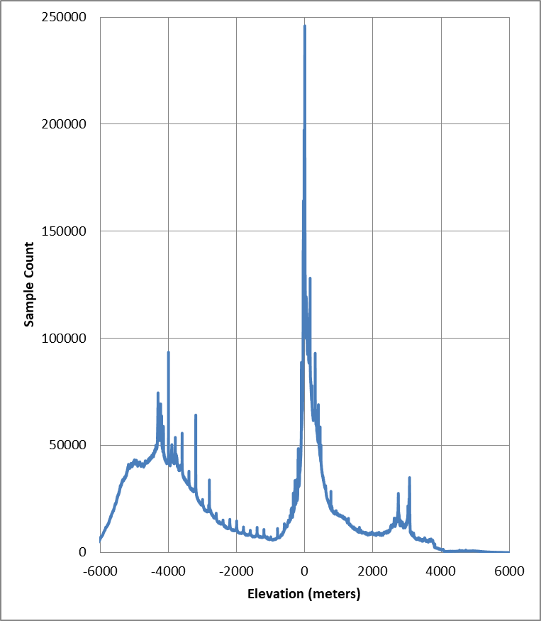
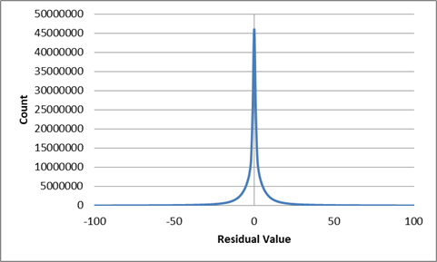

Data Compression for Numerical Raster Data
Introduction
This document provides details for the design, methods, and algorithms used by the Gridfour raster data compression implementation.
One of the goals of the Gridfour software project is to explore data compression techniques for numerical, grid-based data products. We are particularly interested in lossless compression for data sets that have an underlying spatial basis. There are many such data products that benefit from custom data compression. These include Digital Elevation Models (DEMs), geophysical and remote-sensing information, the S-100 marine hydrographic formats, meteorological analysis, laboratory observations, and other grid-based representations of natural phenomena.
The Gridfour API implements lossless data compression for both integer and floating-point raster data formats. The API allows software applications to access the data in part or as a whole on an as-needed basis by performing decompression on-the-fly at runtime. The mechanisms that support authoring and reading raster data products can also serve as a convenient testbed for software developers who are investigating their own data-compression techniques. Developers can extend the capabilities of Gridfour by writing custom codec (coder-decoder) classes that are registered with the Gridfour API at runtime. This approach lets investigators take advantage of Gridfour’s data management capabilities and focus on their core algorithm development.
An example raster data source: ETOPO1
In the discussion that follows, we will use a data set called ETOPO1 to illustrate key points related to raster data compression. The ETOPO series(for Earth topography) is a family of global-scale elevation and ocean depth (bathymetry) data set developed by the U.S. National Oceanic and Atmospheric Administration (NOAA, 2026). ETOPO1 is a numeric raster that gives elevations in integer meters referenced to mean sea level, with negative values indicating depth. The raster has a spatial basis. Its grid is defined by latitude and longitude coordinates (Amante, 2009) with grid cells referenced to specific locations on the Earth. Figure 1 below shows a shaded-relief image that was created using data taken from ETOPO1.

We selected ETOPO1 as an example for a number of reasons. First, at 445 megabytes in size, it is large enough to be worth compressing. Also, the data is complex enough to be interesting. And, finally,terrain data is something that is familiar that we should all have a good intuition for the way it behaves.
The following table summarizes the general properties for ETOPO1.
| Rows in raster | 10800 |
| Columns in raster | 21600 |
| Cells in raster | 233 million |
| Cell spacing | 1/60th degree |
| Cell size (at Equator) | 1.855 km (1.15 mi) |
| Min value (depth) | -10803 m |
| Max value (elevation) | 8333 m |
| Average value | -1818 m |
| Range of values | 19136 m |
| Storage format | two-byte integer |
| Storage size uncompressed | 445 megabytes |
| Storage size zip compressed | 246 megabytes |
| Storage size custom compressed | 100 megabytes |
| Shannon entropy | 12.9 bits/value |
Entropy in ETOPO1
The last entry in the ETOPO1 properties table gives a value for the entropy of the data source. Entropy, one of the fundamental ideas of information theory, was introduced by Claude Shannon (1948). For our purposes, we can use a loose definition of the the term entropy to refer to the complexity of a data source. One of the ideas of the custom compression technques we use in Gridfour is that we can apply transformations to reduce the complexity of our data sources. So the entropy calculation gives us a way of estimating how well those transformations work.
Entropy also gives us insight into the minimum size that a data compression scheme can attain. But there are a number of qualifying factors when applying that insight. For example, ETOPO1 features an entropy of 12.9 bits per value, but both the zip and custom compression achieve values lower than that (7.23 for zip, 3.60 for the custom compression).
See What Entropy tells us about data compression for more details on this topic.
Standard data compression techniques
Data compression is a mature and extensively researched field of study. While there are a substantial number of different data compression algorithms, two main techniques are widely used:
- Huffman coding
- Lempel-Ziv techniques (Zip applications, the Deflate API, etc.)
Huffman coding
Huffman coding is a provably optimal data compression technique (Huffman, 1952). It assigns variable-length bit codes to each unique symbol in a text. The lengths of these bit codes are determined based on a frequency table that relates each symbol to the number of times it occurs in the text. Symbols that occur most frequently are assigned the shortest codes. Symbols that occur less frequently are assigned longer codes. Even though Huffman coding has been superceded by more recent techniques, it is still used as a core component of several compression formats including the JPEG image specification and the Deflate API.
Huffman coding is effective when a text contains a small set of unique symbols that occur with a much higher frequency than all other symbols combined.
Lempel-Ziv techniques (Deflate API)
While the Huffman code operates on individual symbols, Lempel-Ziv techniques are based on identifying sequences of symbols. Essentially, Lempel-Ziv techniques construct a dynamic dictionary of sequences from an arbitrary text and record bit sequences referring to entries from that dictionary. The Deflate API is based on a combination of the Lempel-Ziv 1977 variation and Huffman coding.
Lempel-Ziv techniques, and the Deflate API, are most effective when a text contains several sequences of symbols that occur multiple times.
Why do we need custom compression for raster data?
Data compression techniques are well established for conventional imagery and information products. So, at first glance, it may not be apparent why we would be interested in custom solutions for numerical raster formats. But, as Kidner and Smith pointed out, "most data and image compression algorithms fail to capitalize fully on the inherent redundancy in spatial data" (2003).
The limitations of conventional techniques when applied to spatial-based raster data are apparent in the compression results for ETOPO1. The Windows Zip utility reduces it from 445 megabytes down to 246, or 55 percent of its original size. But the same program reduces this HTML document to 31 percent of its size. Clearly, mainstream techniques work better on plain text than they do on numerical rasters. Conventional techniques are limited in that they do not account for the numerical relationships between adjacent values in a spatial data set. But, as Kidner and Smith (1992), and others (Adobe 1992, Paeth 1991, etc.) showed, we can take advantage of these relationships to transform the data into a form that is more tractable to data compression. For example, the Gridfour implementation reduces the size of ETOPO1 to 22 percent of its original size while losslessly preserving the its content.
How does spatially-aware compression reduce raster data size?
One of the seminal ideas of raster data compression is that there is often only a small variation in value from grid cell to grid cell. In many cases, it is possible for an algorithm to predict the value of a one grid cell based on those of its neighbors. A predicted value may not be always be a perfect match for the source data, but in general the difference between the true value and the prediction (i.e. the residual) should be small. Even better, the information content (the entropy) of the residuals is often much smaller than that of the source data.
The venerable TIFF image format implemented a differencing predictor. The differencing predictor exploits the fact that "many continuous-tone images rarely vary much in pixel value from one pixel to the next" (Adobe 1992, p. 64). It predicts that the value for each pixel will remain the same as its predecessor. The residuals are collected and passed to a conventional data compressor (LZW) which usually yields a substantial reduction in size. Kidner and Smith (1992) improved on this concept by using a triangle-based predictor which considered the values of three neighbors when estimating the value for a particular grid cell.
The Gridfour API implements both the differencing and triangle predictors. Details are given below. It also includes a more advanced algorithm based on Lagrange Multipliers that was proposed by Smith and Lewis in 1994.
How ETOPO1 resists conventional data compression
Figure 2 below illustrates some of the factors that make ETOPO1 resistant to conventional data compression. At first glance, the prominent spike near elevation zero (the shoreline) might appear to be a natural for Huffman coding. Because Huffman assigns the shortest bit sequences to the most frequently occuring symbols in a text, an configuration which would be expected to reduce the compessed size of a data set. But even though the near-zero occur more often than other values across the range, they do not dominate the frequency table for encoded symbols. In fact, they represent less than five percent of the total number of grid cells in the raster. The cost of encoding all data values in the raster outweighs any saving that we might see for any particular subset of the whole.
This situation reflects a trend that we often see in data sets such as ETOPO1. Raster products commonly have a broad set of unique values with similar frequencies of occurance. This characteristic drives up the Shannon entropy for the data set and leads toward less successful data compression. Additionally, most compression implementations carry a non-trivial overhead based on the number of unique symbols that occur in the source data. So the large range-of-values we see in many raster data products can have an even greater impact on the final size of a compressed data set.

Figure 3 below shows what happens when we apply Kidner and Smith's triangle predictor techniques to ETOPO1. We obtain a set of residuals that are much more amenable to data compression than the original values from the raster product. In this case, the spike of near-zero residuals actualy does dominate the frequency table for encoded symbols. Furthermore, the range of unique residual values reduces to a smaller interval (-2970 to +1953). Finally, the overall entropy for the data set is reduced from 12.9 for the raw samples to 4.99 for the residuals. Later in these notes, we will consider ways of reducting that value even further.

Applying predictive techniques to raster data
Predictive techniques make a critical assumption about the nature of numerical raster data products with a spatial basis. They assume that the characteristics of two points closely located in space will tend to be similar. In other words, it assumes that the values of elements that are closely located spatially (i.e. in terms of grid coordinates) will also be close together numerically. And, thanks to this similarity (e.g. this tendency for neighboring samples to correlate), it is possible to use the values of one or more grid points to predict the value of a neighbor. This assumption is generally true in real-world examples such as elevation data. We expect that two points a few hundred meters apart are more likely to be similar than two points placed far apart. This idea is sometimes referred to as "spatial autocorrelation" and has been extensively studied in Geographic Information Analysis and other fields.
The Simplest Predictive Technique
The simplest predictor technique we apply to raster data is the differencing predictor. As mentioned above, the differencing predictor is used in a number of formats including the TIFF image specification. We implement the differencing technique using the following general outline:
- Define some sequence for specifying the values of the grid cells in the raster in order (row-major order, etc.).
- Reserve the first value of the first grid cell in the sequence as a "seed" value.
- For all other cells, predict that the value for the cell will be the same as its predecessor
- The difference of the actual value and the prediction is the residual. Record the residuals for all cells
- Pass the collection of residuals to a conventional data compression routine.
- The result will often be much smaller than a direct compression of the orginal values.
In Gridfour, the seed value is not included as part of the compression, but is treated as an overhead element.
For the most part, implementing a differencing predictor is straightforward. The one area of significant variation lies in how we define the traversal sequence for the grid cells in the raster. The key assumption for the differencing technique is that the numerical values for adjacent cells are relatively closes. So it is important that the traversal sequence preserves adjacency. Now consider the case in which an implementation traverses a grid in row-major order. It accesses grid cells one at a time across a row. Adjency is preserved. But, at the end of a row, it jumps back to the first cell in the next row. For a large raster, that cell may be far removed from its predecessor.
There are patterns for traversing a raster that do preserve adjacency. The GRIB2 format includes a specification in which rows are traversed in alternating order (NCEP 2005, table 5.6). The first row is traversed left to right, the next right to left, etc. This zig-zag pattern preserves adjacency, but has a disadvantage in that the change in direction inverts the signs of the differences. Consider the case of a raster that has a trend of values slowly increasing from left to right. The left-to-right traversal will result in positive values. The right-to-left traversal will result in an equal number of negative values. But we've seen that data compression generally works better for a smaller set of unique symbols than for a larger set. Ideally, we prefer a pattern where the traversal covers the grid in the same direction to the largest degree feasible.
Figure 4 shows the pattern used in Gridfour's differencing predictor. The difference is always computed using an adjacent cell. But, at the transition from row to row, the computation uses the verically adjacent cell rather than the horizontal.

It is worth repeating that the use of the Differencing Model for raster data is not unique to the Gridfour project. It is used in a number of specifications including the GRIB2 raster data format (NCEP 2005, table 5.6) and the TIFF image format (Adobe, 1992, p. 64, "Section 14: Differencing Predictor"). The PNG format includes a differencing predictor, but it treats subsequent grid rows as separate specifications rather than worrying about adjacency issues at the transition from row to row (World Wide Web Consortium, 2003, section 9 "Filtering").
Other Predictor Models
The current version of Gridfour implements two additional predictor models: the Linear Predictor and the Triangle Predictor.
The Linear Predictor model predicts that the data varies as a linear function. The value for the next sample in a sequence is predicted using a straight-line computed from the two that preceded it. The predictor is applied on a row-by-row basis. The vertical coordinate of the points that precede the target point are assigned the values ZA, ZB respectively. If we assume that the grid points are spaced at equal intervals, then the predicted value, ZP, is given by ZP = 2✕ZB - ZA.
The Triangle Predictor was described by Kidner & Smith (1992). It uses three neighboring points A, B, and C, to predict the value of a target sample as shown in the figure below. The vertical coordinate of the points are assigned the values ZA, ZB, and ZC respectively. By treating the grid as having a fixed spacing between columns, s, and a fixed spacing between rows, t, the prediction computation is simplified to ZP = ZB+ZC-ZA.

To see how this relationship is derived, start by taking each sample and the predicted point as vectors:

From linear algebra, we can compute the normal to a plane and locate a point P on that plane using the following:

When we solve for ZP, the x, y, s, and t variables cancel out and we find the simple computation used by the Triangle Predictor model.
Both the Linear and the Triangle Predictor require special handling to initialize the grid before applying the prediction computations. In the case of the Linear Predictor, Gridfour uses the seed value and the pattern established for the Differencing Predictor to pre-populate the first two columns of the grid. In the case of the Triangle Predictor, the first row and first column are populated using same approach. Once the grid is initialized, the specific predictors can be used for the remaining grid cells.
Serializing the Residuals
Once the residuals are computed using a predictor-residual model, they are passed to compression processes based on conventional data compression algorithms such as the Huffman and Deflate techniques described above. Both the custom Huffman implementation included with the Gridfour code base and the Deflate API provided as part of the standard Java library are designed to process bytes. But the predictive-residual models produce output in the form of integers. So in order to use them to process and store the outputs from the models, the residuals must somehow be serialized into a byte form. Most of the residuals tend to be close to zero, so the serialization for them is trivial. In some cases, however, the residuals will be in excess of the value that can be stored in a single byte.
While it would be feasible to simply split out the integer residual values into the component bytes, doing so would tend to dilute the redundancy in the output data. Furthermore, a significant number of the residuals are quite small (using the Triangle Predictor, 87.9 percent of the residuals computed for ETOPO1 have an absolute value less than 15). So using 4 bytes to store these small values would be wasteful.
To serialize the residuals, Gridfour uses a scheme that it calls the M32 code. M32 is an integer-to-byte coding scheme that adjusts the number of bytes in the output to reflect the magnitude of each term in the input. In that regard, it uses an approach similar to that used for the widely used UTF-8 character encoding. As in the case of UTF-8, the first byte in the sequence can represent either a literal value or a format-indicator that specifies the number of bytes to follow. M32 also resembles the variable-length integer code used by SQLite4 (SQLite4, 2019), except that it supports negative values as well as positive. The first byte in the output is essentially a hybrid value. For small-magnitude values ( in the range -126 to +126), it is just a signed-byte representation of the input value. The values -127 and +127 are used to introduce multibyte sequences. And the value -128 is used to indicate the minimum 32-bit integer value, -2147483648, which Gridfour often uses as a null-data code. In the multibyte sequences, the bytes that follow the introducer give bits for the numerical value in big-endian order. Each byte carries 7 bits of information with the high-order bit used to indicate if additional bytes follow. The length of the sequence depends on the magnitude of the residual to be coded. In the worst case, 6 bytes are required to encode a large magnitude residual (1 byte for the introducer, 5 bytes for the content).
The M32 coding scheme is effective in the case where the computed residuals tend to be small because it preserves the one-byte-per-value relationship. Again, in the case of larger residuals, the M32 code can actually be longer than the 4 bytes needed for a simple integer. Fortunately, a good predictor will produce small residuals. In fact, for the elevation data sets used when developing Gridfour, the average length of the M32 code sequences is about 1.013 bytes per grid value.
Compressors
By applying the predictive-residual transformations and M32 serialization, the Gridfour codecs transform the data to a state where it can be processed by conventional compressor methods. While the transformation-serialization process generally reduces the size of the data (as it did for the ETOPO1 example), its main benefit is that it results in a form with more redundancy than the original. And as the redundancy is increased, the data becomes more suitable for processing by conventional data compression techniques.
As noted above, the two codecs currently implemented in Gridfour are based on the Huffman coding and Deflate algorithms. APIs that support Deflate are available in most popular software environments and programming languages. Gridfour uses the Deflate class provided by the standard Java API. For the simpler Huffman coding, Gridfour uses a custom implementation.
During the compression phase, the current implementation of Gridfour attempts to compress data using both codecs and all three predictive-residual transformations. It then selects the serialized form that produces the smallest output size. In testing with ETOPO1, the Deflate algorithm was selected in about 65 percent of the tiles with Huffman being selected for the remaining 35 percent.
Huffman Coding
Huffman coding was originally developed for the compression of text-based data and the terminology associated with it reflects that origin. For these notes, we will stick to the usual conventions and refer to the sequence of data values to be compressed (the M32 serialized bytes) as the "text". Individual elements with the sequence (each M32-serialized byte) will be described as the symbols.
Huffman coding is based on an analysis of the frequency with which certain data values (symbols) appear within the data sequence (text) to be compressed. It provides an efficient way of assigning a unique sequence of bits to each symbol such that the more common symbols have shorter encoding sequences and the less common symbols have longer sequences. Since common symbols can be encoded using short sequences, the overall length of the encoded text is reduced.
One consequence of this approach is that the encoded message must somehow carry information about the frequency table for the symbols it encodes. Traditional Huffman implementations provide this information directly by including a symbol-frequency table at the start of the compressed data sequence. Adaptive Huffman methods embed the information in the compressed sequence itself. In either case, the frequency information adds overhead to the encoded data.
In many cases, the overhead for the frequency information has a fixed size regardless of the length of the encoded text. Thus, as the length of the original text increases, the proportion of the output due to overhead elements decreases. So, under the Huffman encoding, longer text tends to compress more efficiently than shorter text.
On the other hand, in some data sets, the distribution of the symbol frequencies can change over the course of the text. For example, in the ETOPO1 elevation data, the symbol table for a mountainous region behaves differently than that collected over the plains. So if a set of elevation data set contained data for both regions, a single frequency table would not provide an efficient description the two separate regions. In spatial analysis, this tendency of the statistical properties of data to change across a data set is referred to as non-stationarity.
These two considerations have a direct bearing on the size of the tiles specified when creation a Gridfour file to cover a raster product with non-uniform behavior. A larger tile size reduces the amount of symbol-table overhead compared to the length of the encoded data. But a larger tile also allows for more non-stationarity and thus dilutes the effectiveness of the symbol table. Of course, a larger tile size also increases the memory use by the application. So finding an optimal tile-size choice may require some experimentation. In working with elevation data sets, we have found that a tile size in the range of 10 to 40 thousand grid cells is usually a good place to start.
How Gridfour Stores the Huffman Tree
In the classic Huffman algorithm, the symbol-frequency table is used to create a tree structure that serves as a mechanism for encoding or decoding the compressed data. Although many implementations store the frequency data directly, the Gridfour implementation gains efficiency by storing the structure of the tree itself rather than retaining the actual frequency data.
In the storage phase of processing, the Huffman tree is created using the classic algorithm. Once established, the tree is stored according to the following recursive algorithm which starts from the root node of the tree.
1. Introduce with sequence with an unsigned byte indicating the number
of unique symbols, N, in the tree. Since there will never be zero symbols
in the tree, Gridfour stores the value N-1 in this byte. Thus one byte is sufficient
to represent all possible symbol counts for a M32 representation.
2. Traverse the Huffman tree starting from the root node using RecusiveStore(rootNode)
3. RecursiveStore(node)
a. If the node is a branch
i. Output a bit with value 0.
ii. Call RecursiveStore on the left child node.
iii. Call RecursiveStore on the right child node.
iv. Return.
b. If the node is a leaf (a terminal)
i. Output a bit with a value 1.
ii. Output the symbol.
iii. Return.
In testing with the ETOPO1 data set, there were typically about 100 unique symbols in a M32-serialized tile. Storing the Huffman tree algorithm averaged about 782 bits per tile.
For simplicity, the tree-encoding algorithm was described above using a recursive approach. In the actual code, it is implemented using a stack. Although the stack-based approach leads to more complicated code, it is necessary because of the potential depth of recursion that might be encountered when storing the tree structure. In rare cases, the depth of the Huffman tree (and thus the depth of recursive calls) could reach 256, which would be too deep for some Java JVM’s. Thus a safe implementation required the use of a stack.
Arithmetic Coding
Kidner and Smith (2003) demonstrated improvement in compression ratios by using arithmetic coding rather than Huffman codes. Because arithmetic coding reflects the frequency distribution of symbols in the compressed data more accurately than Huffman, it can achieve better compression ratios than Huffman. Unfortunately, implementing arithmetic coding is more complicated than implementing Huffman coding. Arithmetic encoders also tend to require more processing time than Huffman.
As an experiment, we implemented a compression codes using the Reference Implementation of an adaptive arithmetic encoder (Nayuki, 2020). During the test, we replaced the Huffman codec with the arithmetic codec, but retained the Deflate codec. The relative number of tiles for which arithmetic coding was selected remained roughly the same as for the Huffman case described above. But the arithmetic encoder reduced the size of the compressed data by about 2 percent. On the other hand, arithmetic coding required more processing time than Huffman.
| Method | Bits/Symbol | Time to Read Tiles (seconds) |
|---|---|---|
| Huffman & Deflate | 4.6 | 1.9 |
| Arithmetic & Deflate | 4.5 | 7.2 |
It is worth noting that the Reference Implementation focuses on correctness of implementation and clarity of code, so lacks some optimizations that would tend to complicate or obscure the logic. So, there may be opportunities for reducing the processing time. Arithmetic coding may be the subject of future investigation for the Gridfour project.
Future Work
The introduction to this article made the claim that the Gridfour package is intended to serve as a testbed for investigators and software developers who wish to experiment with their own solutions for raster data compression. We hope that by describing the current implementations, we demonstrated some of the reasons that we think that claim is valid.
There are many, many promising avenues to explore for better solutions to the raster data compression problem. Kidner and Smith (2003) used a more powerful predictor based on Lagrange multipliers and arithmetic coding. Some commercial solutions (and the JPEG 2000 standard) have explored the use of wavelet functions. Data compression continues to be an area of active interest in the software community, and we fully expect that new techniques are waiting to be discovered.
The Gridfour project is especially interested in lossless, or nearly lossless, techniques for compressing real-valued data. The current Gridfour implementation implements compression for floating point data, but the results are not as successful as they are for integers.
If you are investigating raster-based data compression, we wish you the best of luck and hope that insights from Gridfour can help you on your way. And, as always, we welcome your ideas and suggestions.
References
Adobe Systems, Inc. (1992). TIFF Revision 6.0 Final – June 3, 1992. Retrieved from https://download.osgeo.org/libtiff/doc/TIFF6.pdf
Amante, C. and B. W. Eakins (2009). ETOPO1 1 Arc-Minute Global Relief Model: Procedures, Data Sources and Analysis. NOAA Technical Memorandum NESDIS NGDC-24, DOI: 10.7289/V5C8276M
Cutler, C. Chapin. (1950). U.S. Patent No. 2605361, "Differential Quantization of Communication Signals". Filed June 29, 1950, issued July 29, 1952
Deutsch, L. Peter (1996). "DEFLATE Compressed Data Format Specification version 1.3". IETF. p. 1. sec. Abstract. doi:10.17487/RFC1951. RFC 1951.
Huffman, D. (1952). "A Method for the Construction of Minimum-Redundancy Codes" (PDF). Proceedings of the IRE. 40 (9): 1098–1101. doi:10.1109/JRPROC.1952.273898.
Kidner, D.B. and Smith, D.H. (1992). "Compression of digital elevation models by Huffman coding". Computers and Geosciences, 18(8), 1013-1034.
Kidner, David B. & Smith, Derek, H. (2003). "Advances in data compression of digital elevation models". Computers & Geosciences 29 (8), 985-1002.
National Oceanic and Atmospheric Administration [NOAA], 2026. ETOPO Global Relief Model. National Centers for Environmental Information website accessed September 2026 from https://www.ncei.noaa.gov/products/etopo-global-relief-model
National Weather Service -- National Centers for Environmental Prediction [NCEP], 2005. "NCEP WMO GRIB2 Documentation". Accessed January 2020 from https://www.nco.ncep.noaa.gov/pmb/docs/grib2/grib2_doc/
Nayuki (2020). "Reference Arithmetic Coding". Retrieved January 2020 from https://www.nayuki.io/page/reference-arithmetic-coding
Nelson, M. (1991). The Data Compression Book. M&T Publishing Company, Redwood City, CA.
Paeth, Alan W. (1991). Arvo, James (ed.). "Image File Compression Made Easy". Graphics Gems 2. Academic Press, San Diego: 93–100. doi:10.1016/B978-0-08-050754-5.50029-3. ISBN 0-12-064480-0.
Shannon, C. (1948). A mathematical theory of communication (PDF). Bell System Technical Journal. 27 (3): 379–423. doi:10.1002/j.1538-7305.1948.tb01338.x. hdl:11858/00-001M-0000-002C-4314-2. Reprint with corrections hosted by the Harvard University Mathematics Department at https://people.math.harvard.edu/~ctm/home/text/others/shannon/entropy/entropy.pdf (accessed November 2024).
Smith, Derek H., & Lewis, Michael. (1994). Optimal predictors for compression of digital elevation models. Computers & Geosciences, Volume 20, Issues 7-8, August-October 1994, 1137-1141
SQLite4 (2019). "Variable-Length Integers". Retrieved October 2019 from https://sqlite.org/src4/doc/trunk/www/varint.wiki.
Wikipedia (2020). "Differential pulse-code modulation". Retrieved January 2020 from https://en.wikipedia.org/wiki/Differential_pulse-code_modulation
World Wide Web Consortium. (2003). Portable Network Graphics (PNG) specification (Second edition) (W3C Recommendation). https://www.w3.org/TR/2003/REC-PNG-20031110/